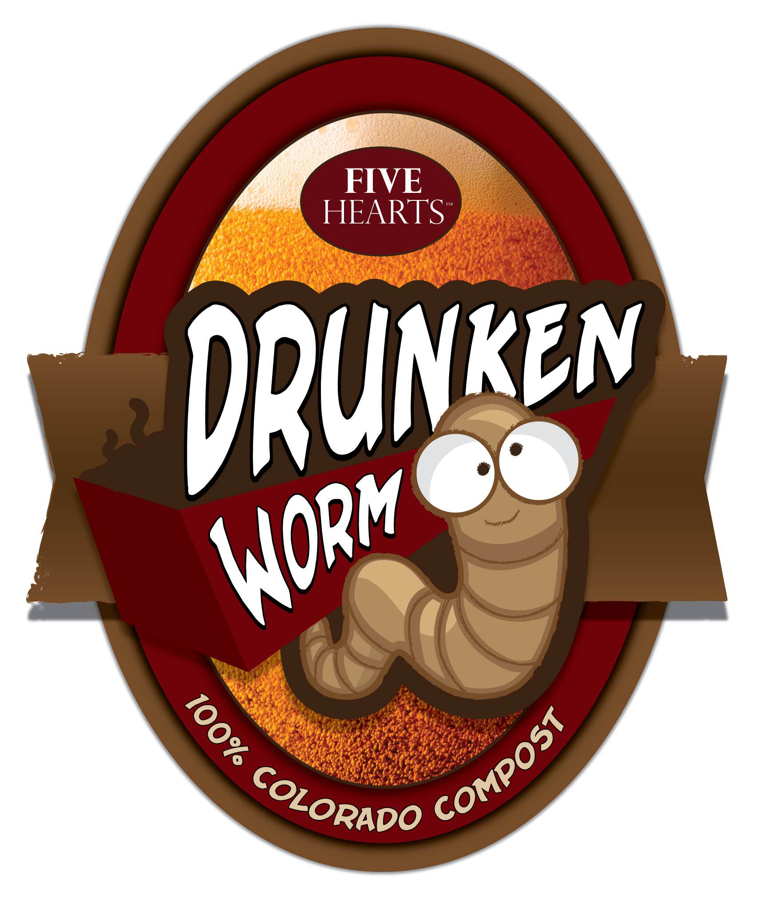

Five Hearts Compost

Why Compost?
Drunken Worm Compost
Buy Some Dirt
FAQ
About
Contact Us
Buy Compost
How much compost do I need?
Use the calculator to figure out how many bags of compost you need:
How many square feet do you need to cover?
Calculate